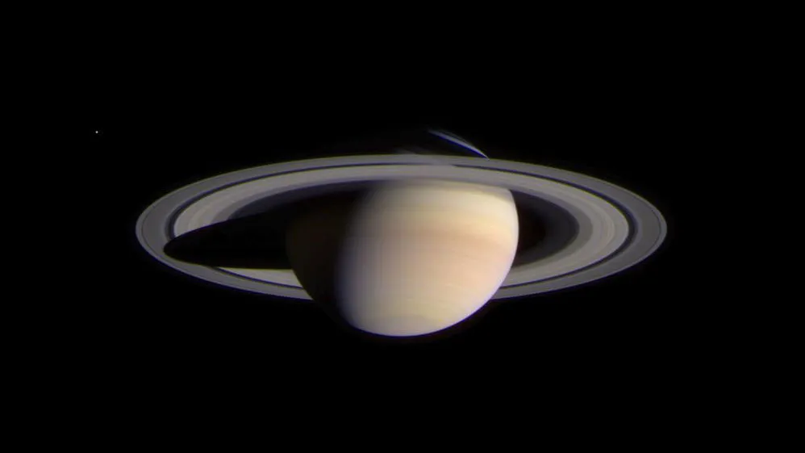

Saturn

Saturn is the sixth planet from the Sun and the second-largest in the Solar System, after Jupiter. It is a gas giant with an average radius about nine times that of Earth.
Interesting Facts about Saturn
- Saturn has a thick atmosphere composed mainly of hydrogen and helium.
- Saturn has 82 known moons, with Titan being the largest and the second-largest moon in the Solar System.
- Saturn is best known for its prominent ring system, which is composed mostly of ice particles, with a smaller amount of rocky debris and dust.
- Saturn's magnetic field is weaker than Jupiter's but still 578 times as powerful as Earth's.
- A day on Saturn (one rotation) takes about 10.7 hours.
- A year on Saturn (one orbit around the Sun) takes about 29.5 Earth years.
Home